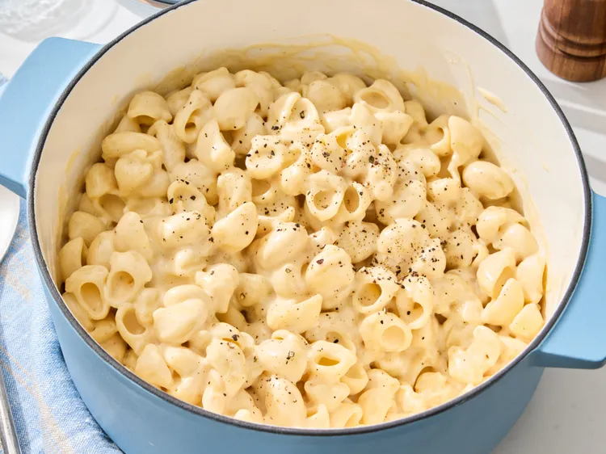

Panera Mac and Cheese

Description
Panera Bread’s Mac & Cheese features tender medium shell pasta tossed in a
ultra-rich, creamy sauce made from a blend of cheeses highlighted by a
tangy, aged white cheddar cheese base
Ingredients
- 1 pound dried medium shell pasta
- 1/2 cup butter
- 1/4 cup all-purpose flour
- 1 teaspoon salt
- 1/2 teaspoon ground black pepper
- 1/2 teaspoon ground mustard
- 1/4 teaspoon paprika
- 2 1/2 cups whole milk
- 1 cup heavy cream
- 2 cups shredded extra-sharp white Cheddar cheese
- 1 cup shredded Gruyere cheese
Home